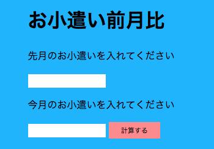
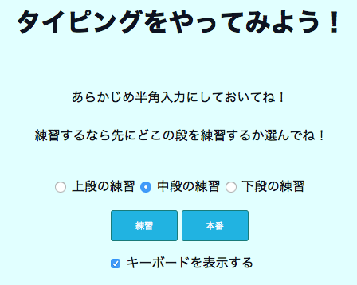
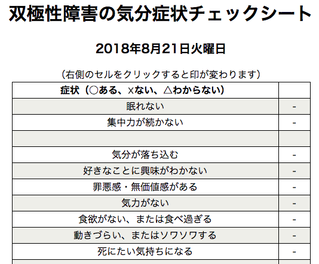
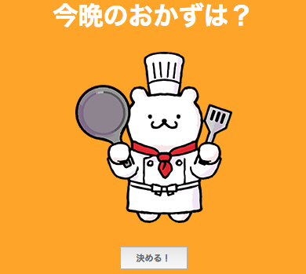
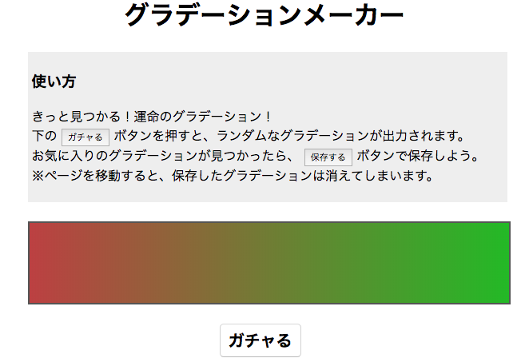
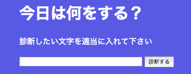
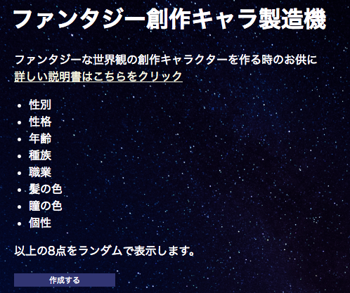
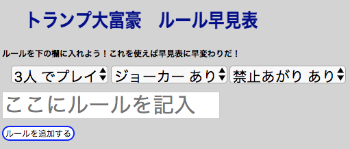

評価コメントは個別に送らさせていただきます。
お小遣い前月比
自分のお小遣いがどれだけ増えたのか減ったのかを調べたくて作りました。 前月と今月の変化を％で表します。
コーディング技術 点、アイデア 点、完成度 点、総合 点
miifriendsTyping
自分はタイピングが苦手なので、タイピングの練習が出来る Webアプリ を作ってみました。文をタイプしていく本番モードの他に、上段、中段、下段のどれか 1 つに絞ってタイプの練習が出来る練習モードも作りました。本番モードの方は、表示されたアルファベットをそのままタイプするようにしてください。作品を GitHub Pages で公開しています。URL は https://miifriends.github.io/typing-game/ です。
コーディング技術 点、アイデア 点、完成度 点、総合 点
双極性障害の気分症状チェックシート
双極性障害当事者のための、気分が上がっているのか下がっているのかチェックするためのツールです。本日の日付が自動表示されます。項目へのチェックはマウスクリックで行えるよう工夫しました。
コーディング技術 点、アイデア 点、完成度 点、総合 点
今晩のおかず決めアプリ
N高生の母です。私もプログラミングやってみたくてN予備校に入校しました。「今日の晩ごはん何食べたい？」と家族に聞いても、いつも「なんでもいい」という答えが返ってくるので、決めてくれるアプリを作りました。
コーディング技術 点、アイデア 点、完成度 点、総合 点
グラデーションメーカー
ボタン一つで、ほぼ無限通りある組み合わせの中から、１つのグラデーションを作ってくれます。自分でグラデーションを作ろうとすると、無限通りの可能性を最大限に活かせないので、このようなソフトウェアを作ってみました。思いもよらないきれいなグラデーションを見つけたり、暇つぶしに便利です。
コーディング技術 点、アイデア 点、完成度 点、総合 点
Cygnet
その日にやることが思いつかない(悩む)時があるのでその時に一発で何をすればいいか表示してくれるようなものを作りました。assessmentの流用
コーディング技術 点、アイデア 点、完成度 点、総合 点
ファンタジー創作キャラ製造機
魔法やモンスター、果てには天使も存在する、ファンタジーな世界観に登場するキャラクターを作成するweb。
コーディング技術 点、アイデア 点、完成度 点、総合 点
大富豪ルール早見表
夏休みに、親戚と大富豪をやった時に「あ、そのルール今ないからw」と言う発言にイラっと着たので、制作することを決意しました。ルールを書ける欄を半無限に作れるので、これでイラっとくる親戚を黙らせましょう！
コーディング技術 点、アイデア 点、完成度 点、総合 点